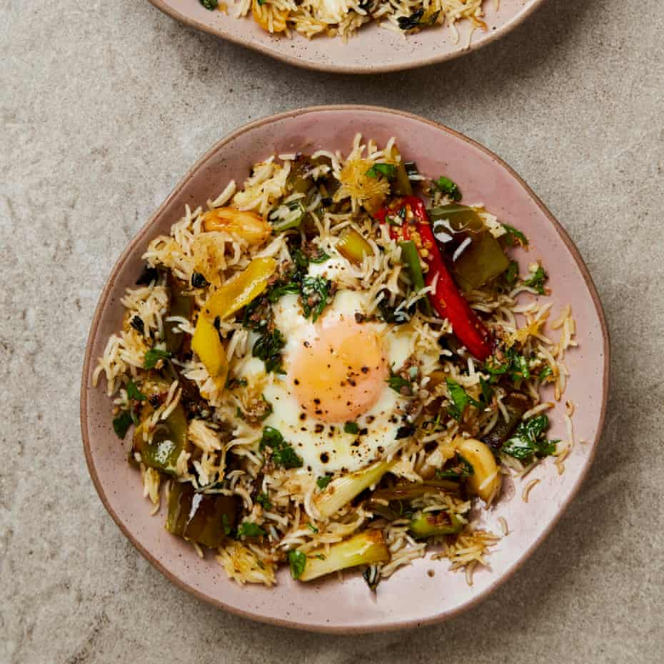

Mediterranean-style fried rice with anchovy lemon dressing

For the dressing
First, make the dressing. Put the anchovies, garlic, cumin, oil and a good grind of pepper in a small saucepan on a medium heat. As soon as it starts to bubble, turn off the heat, add the lemon juice, leave to cool, then stir in the parsley.
Put a tablespoon of oil in a large frying pan for which you have a lid, and put on a medium-high heat. Add the diced pepper and saute for four minutes, stirring occasionally, until nicely coloured and softened. Add two more tablespoons of oil, the garlic, red chilli and spring onion whites, and cook for two minutes more, until they’ve also taken on some colour. Now add the spring onion greens, thyme and strips of lemon peel, and cook for another minute.
Add the rice, a quarter-teaspoon of salt and a good grind of pepper, and cook for three minutes, stirring to breakup any clumps, until the rice is heated through and starting to take on a little colour.
Use a spoon to make two wells in the rice mixture, exposing the bottom of the pan. Pour a teaspoon and a half of oil into each well, then crack an egg into each one and turn down the heat to medium. Sprinkle lightly with salt and pepper, cover the pan with a lid and leave to cook for four to five minutes, until the egg whites are set and the yolks still runny, and the bottom of the rice is nice and crisp. Drizzle the dressing all over the top and serve right away straight from the pan.